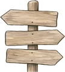

Map tiles can't load here, so only the pins show. They load normally when the page is opened from your computer or a website.

Signposting SomersetConnecting people with local mental health and wellbeing support.Local mental health and wellbeing support.
Assist isn't connected to its relay yet.
If someone is at risk right now, call 999. For urgent mental health help, call NHS 111 and choose option 2. They can also talk to Samaritans or Mindline any time.
Thinking...